En primer lugar, Aprenderemos como subir una instancia a AWS EC2, si ya sabes hacer esto ve a al punto "Conectándonos vía SSH" para ver la parte de deployment
Introducción a AWS
En este tutorial levantaremos una instancia de ec2, es decir, un servidor virtual elastico, es elastico por que el proyecto crece o disminuye automáticamente dependiendo del uso de este. para ello primero tenemos que configurar 3 cosas, primero el security group, luego la llave de seguridad y después el load balancer. Iremos entrando en detalle sobre que son cada uno de ellos.
1- Security Group
El secutiry group es como un firewall virtual que controla el tráfico de una o más instancias, por ejemplo, podemos permitir que se pueda entrar a nuestro sistema por http o por shh o por ambos. Por defecto esta todo denegado, así que ponemos lo que queremos permitir. 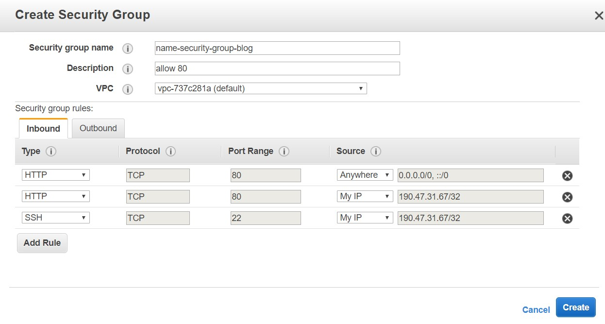
2- Key Pair (llave de seguridad)
Cuando creamor la llave de seguridad se generara un archivo con extención .pem este archivo tendrá una llave privada que queda en el servidor de amazon y una llave pública que nos servira para identificarnos y acceder al servidor
 luego le damos permisos de lectura al archivo
luego le damos permisos de lectura al archivo
$ chmod 0400 elNombreDeTuLlave.pem
3- Load Balancer
Gestiona las llamas al servidor para que no se caiga, este ve porque puertos entrara cada persona para ver si llevar el trafico a otro servidor o no, es decir, recibe el trafico y lo divide en los servidores 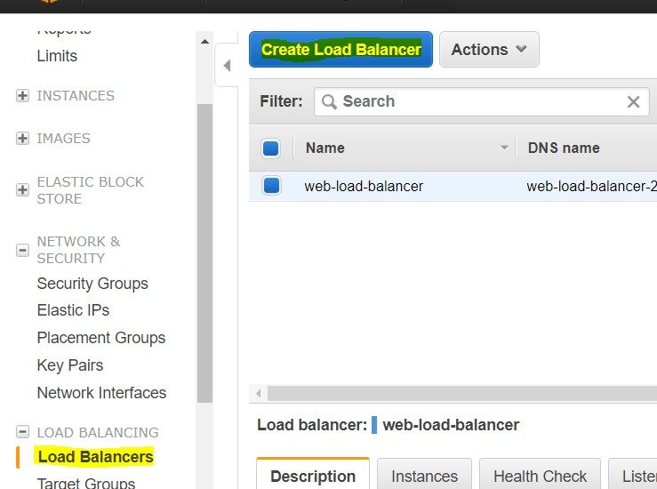 Selecciona el Classic Load Balancer luego te saldra la configuración básica, en este definimos el nombre del load balancer los puertos y protocolos donde escuchara este balanceador. 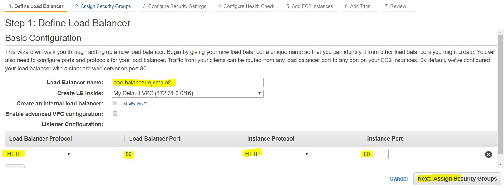 Luego asignamos el grupo de seguridad que tendrá este balanceador de carga, posteriormente nos saldra un mensaje de alerta avisando que no estamos usando un certificado ssl, por ahora está bien así por lo que le damos siguiente, luego configuramos el Health Check 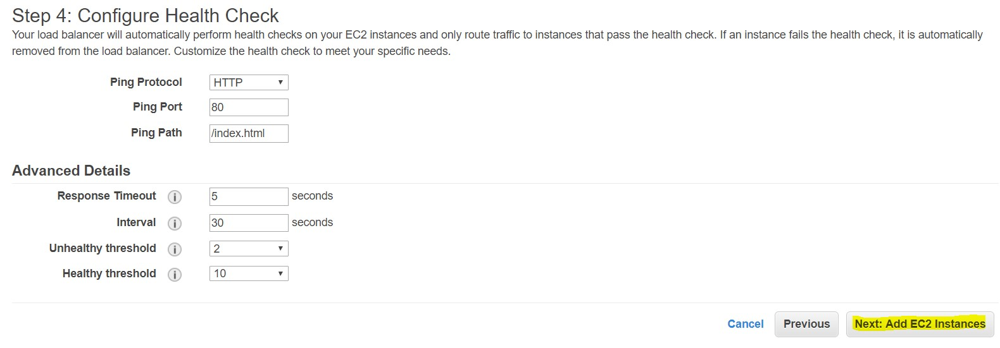 Luego nos pedirá seleccionar una instancia, como no la hemos creado aún solo ponemos siguiente. Luego nos pedira poner algun tag, no pondremos nada y seguimos, finalmente tendremos nuestro balanceador de carga creado. 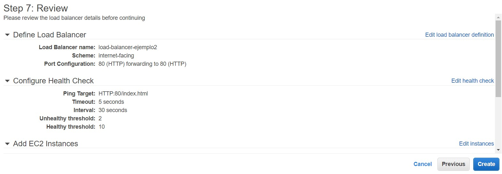
3- Las Instancias
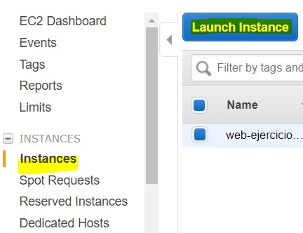 En esta parte instalamos el S.O que queramos, hay gratuitos y otros no, elegimos Amazon Linux 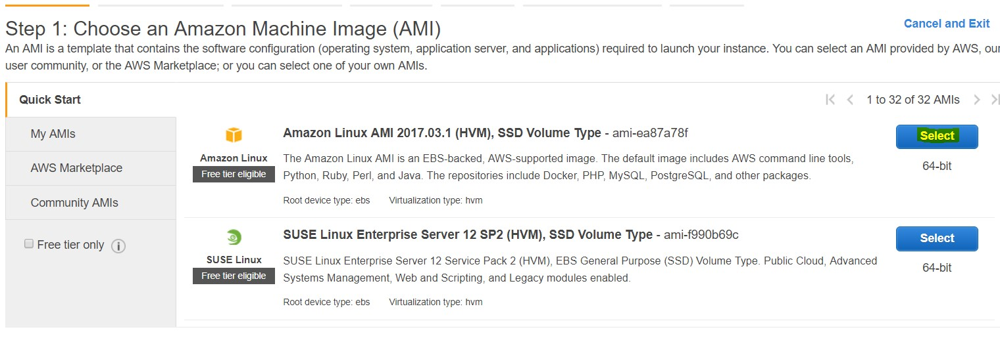 Luego nos preguntara que capacidad necesitamos, elegimos la que viene por defecto (t2.micro) y presionamos Next.
En esta área de configuración a nivel de servidor vemos que abajo esta la sección Advance detail. allí pondremos los comandos que se ejecutaran cuando se genere la instancia, así que pondremos los comandos para crear un servidor LAMP, que son los siguientes
#! /bin/bash -ex
yum update -y
yum groupinstall -y "Web Server" "MySQL Database" "PHP Support"
service httpd start
chkconfig httpd on
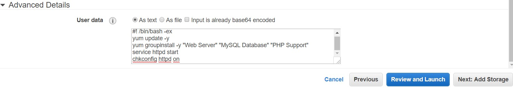
continuamos con Next y en Add Storage dejamos la configuración sobre la capacidades que tiene para trabajar el sistema por defecto, y seguimos con next. Posteriormente nos dejara poner Tags donde ponemos datos con la información que queramos que tenga la instancia.
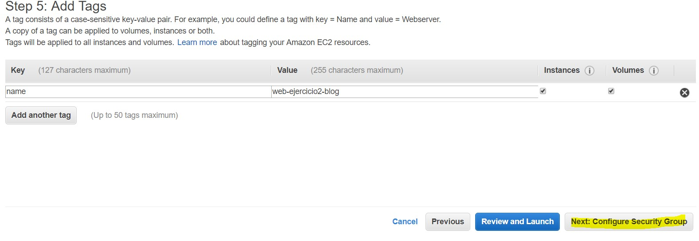
Posteriormente en Configure Segurity Group seleccionamos el grupo de seguridad creado anteriormente y seleccionamos el botón Review and Launch después seleccionaremos la llave que creamos
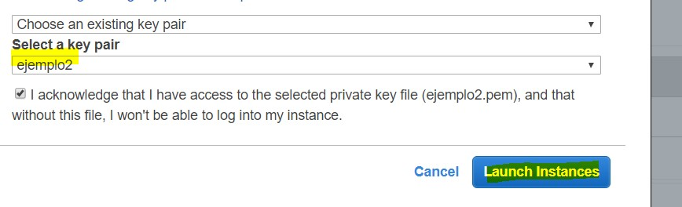
y listo!. yum update -y
yum groupinstall -y "Web Server" "MySQL Database" "PHP Support"
service httpd start
chkconfig httpd on
Su instancia al principio saldrá con estado pendiente y luego estará corriendo.
Conectandonos vía SSH
Nos vamos a la consola y ponemos el siguiente comando
ssh -i Download/ejemplo2.pem ec2-user@18.220.179.187
donde -i significa que archivo vinculamos de la llave al servidor Download por que ahí tengo mi llave.
18.220.179.187 por que esa es a direccion publica de mi instancia, ustedes deben ver cual es la suya.
ec2-user por que somos usuarios de ec2
una vez ejecutado entraremos al servidor. 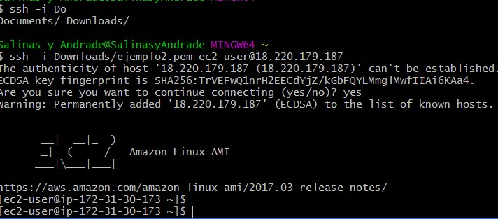
Instalando Git en el servidor
ejecutamos el comando
Sudo Yum install git
con eso tenemos instalado git. y revisamos con
git --version
Luego nos vamos a
cd /var/www/html
y ponemos
sudo git init
Creamos la llave SSH en el servidor
Ahora creamos una llave en nuestro server (sin clave), con el comando
ssh-keygen -t rsa -b 4096
luego añadimos la llave publica generada en nuestro repositorio de GitHub. para esto primero vemos donde se creó la llave, en mi caso en home
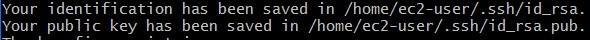
nos vamos a esa ruta y con
cat id_rsa.pub
podemos ver la llave publica, copiamos y pegamos en nuestro repositorio de GitHub.
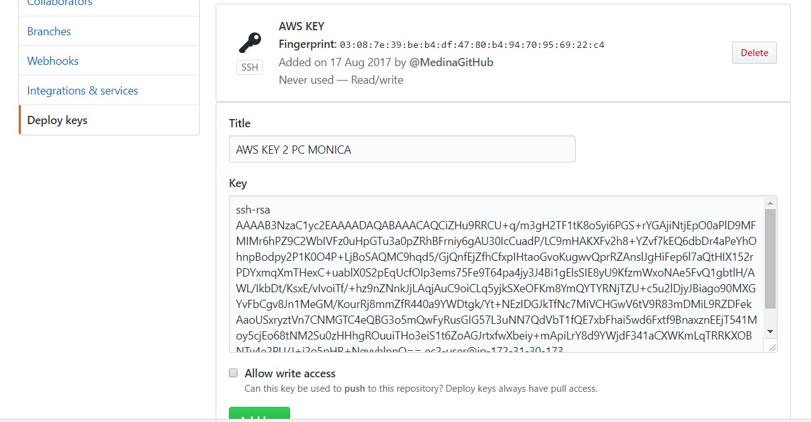
(click a Allow write access)
Deploy
Ahora desde nuestro archivo /var/www/html nos traemos el proyecto de git
sudo git remote add origin https://github.com/MedinaGitHub/BlogSebastianMedina.git
sudo git pull origin master
sudo git pull origin master
si entramos a la ip publica del servidor podremos ver los cambios.